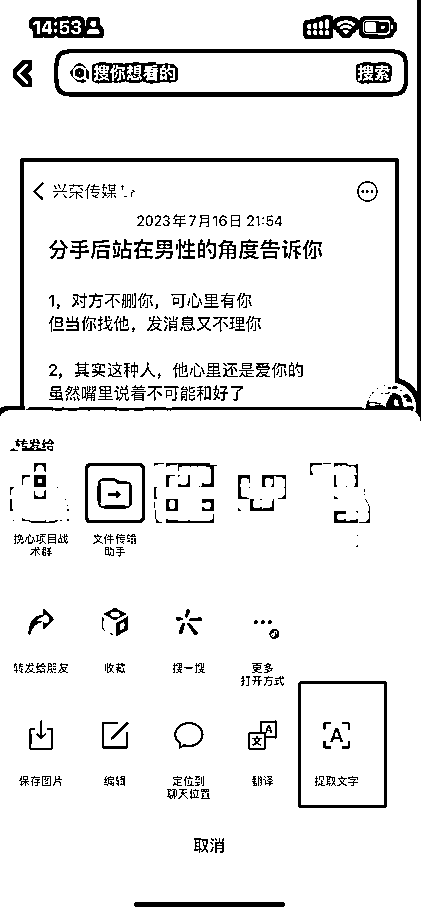

来源：https://p9z0j9usen.feishu.cn/docx/EgJydbzGyocktUxuUOMcM2nfnye
圈友们大家好，我是挽心，一名擅长搞流量的实战家。今天给大家分享我正在做的情感粉引流项目保姆级攻略，我是如何通过情感粉引流项目单月赚到5w+的。
大家平时多多少都了解过情感行业，应该知道情感行业的门槛相对来说比较高，要有相应的资质，许多人想进入情感行业却望洋兴叹。而情感粉引流是进入情感行业的一种相对低门槛的方式。它是指通过社交媒体平台如微信公众号、抖音、小红书等，以引导用户产生情感共鸣和兴趣的方式，吸引用户关注并进行营销推广到情感公司的过程。
废话不多说，接下来进入正题
现在跑的部分账号数据⬇️
简单来说，情感粉指的有恋爱挽回、婚姻修复、脱单追求等需求的精准用户。
①恋爱挽回
②婚姻修复
③脱单
通过通过抖音、小红书等平台发布情感类作品，吸引需求用户找你咨询，然后你将需求用户推到情感咨询师的微信上，次日结算。情感流量出售的单价一般是在40—100左右，根据数量，质量，类型来定价。
①不需要很高的资质和很高的粉丝基础，不用拍摄视频，也不需要开直播，只需要准备几个账号就能做。
②没有繁琐的售后服务，不需要像传统电商一样对接售后退换货。也不需要像虚拟课程一样整理资料，引流转化。只需要做纯引流的工作，不需要自己花时间去转化。几乎就是零成本创业。
③适合多群体下场：无论你是学生、教师、上班族、宝妈、副业党.....都可以做情感粉引流，把情感粉引流当做副业可以有一份稳定的副业收入，或者像我一样，当做主业，既可以自己做流量赚够比主业多的钱，也是开一个流量工作室，放大复利。
①纯书单
②视频书单
③备忘录图文

④画中画图文
口罩号顾名思义就是给人物增加一个口罩特效，也是搬运和伪原创的一种玩法，如果想要做口播，但是又不想自己拍摄视频，就可以直接引用和下载已有的抖音的真人口播视频，进行二次创作，截取人物形象配上新的口播声音，为了避免原创度低或者声音和嘴型不同步，再给这个视频带上一个口罩特效，形成一个原创的视频发布。

混剪号其实就是伪原创，简单理解就是把A号的口播音频下载下来，再去混剪一段视频长度和音频时长一致的视频，最终形成一个视频去输出。

主要就是口播类型的帐号，就是一个人对着镜头或者侧对着镜头去分享一些情感相关的知识，从而吸引粉丝产生兴趣，达到引流的目的。门槛要求较高，一般不做考虑。
实拍其实主要也是为了保证原创的一种方式，通过实拍的视频，加上文案的标题，把文案的正文内容打在简介里面。一般快手和视频号用来发布。
制作难易程度：IP号>混剪号>口罩号>实拍号>书单号
投产比（投入产出比）：书单号>口罩号>实拍号>混剪号>IP号 (仅供参考)
抖音常用：IP号、混剪号、口罩号、实拍号、书单号
快手常用：实拍号、书单号
视频号常用：口罩号、实拍号、书单号
小红书常用：混剪号、图文
🎈对标账号选择

①搜索情感相关话题
②选择自己想做的类型
③筛选对标账号
🎈爆款内容制作

①挑选爆款作品
②截图发到微信

③微信自带提取文字

④保存到备忘录

⑤搭建自己的素材库

⑥剪映制作作品
🎈爆款音乐选择

①挑选爆款音乐

②收藏音乐
③直接拍同款
引流之前要问清粉丝年纪、需求、分手时间等问题，可以使用剪切板快捷回复。
①抖音自带快捷回复
②讯飞输入法常用语
优势：服务型付费咨询价格是没有标准的，可以自己定价，上限高。
劣势：需要有一定的能力和资质，售后一定要做好，不然容易被投诉举报。
优势：不用操心售后问题，只需引流就好，能够有稳定的利润。
劣势：流量后续转化的利润拿不到，整体利润有上限。情感公司一般不接数量很少不稳定的个体户。找不到稳定的情感公司有一定的风险。
优势：可以拿到更高的利润，但不稳定，比较考验自己引流的粉丝质量。
劣势：不能像卖粉一样拿到稳定的利润。
因为挽心现在主要是对接情感公司出售流量，给大家讲一下在这个过程中我遇到的坑。
因为我们的利润产出主要是根据我们卖给情感公司的流量来决定的，如果找到不靠谱的情感公司，他们会故意删除聊天记录，然后给你算无效粉。或者是删除添加记录，告诉你没加，通过这种方式去克扣你的流量。
所以在和情感公司第一次合作时可以要求对方给你打预付款，然后根据当天的退粉情况决定要不要长期合作。一般来说退粉基本上都是在百分之20以内。现在挽心合作的退粉都是在百分之10了。当然这个也跟自己的粉丝质量有关。
退粉太多自己也可以去抖音找粉丝聊一下，看一下他加了咨询师微信以后得聊天记录，一旦发现对方作假，立马停止合作。
与情感公司合作，最好也要对对方有一个审核，看一下对方的营业执照和资质，避免对方是一个三无公司在搞诈骗，这样对我们做流量的也有牵扯。
第一次合作，最好让对方把公司地址，营业执照以及办公环境发来看一下，然后自己去企查查或者boss上搜一下，看一下这个公司的情况，是否靠谱。
目前整个市场上大环境趋势还是不错的，值得大家去深入研究此行业，五月份的学员目前也能很轻松的日入破千了。
我是挽心，专注情感粉引流、私域引流，欢迎前来交流学习探讨。